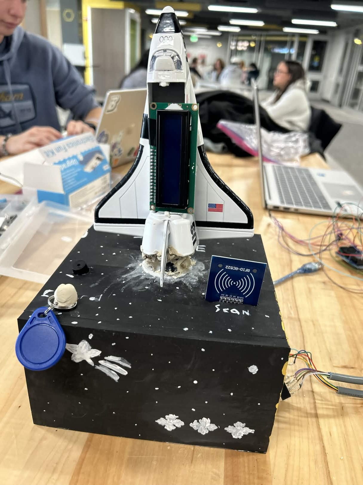

Super Space Race
Super Space Race is the name of my fall semester engineering project. The idea was simple: with provided tools, create a game using a Uno R4. We needed to add some sort of unique "Engineering Concept" to it, so my Group decided to add an RFID scanner.


The idea was to replace the control button with an RFID scanner, to make it feel more "futuristic." The wiring turned out to be slightly more difficult than intended. Not to mention, the RFID mfrc522 module we were provided was a fake. The only way even gen the Arduino to recognize and read the module was by using the Vin(!) pin instead of 3.3V. Typically using the Vin pin can damage your circuits, so it was definitely strange this knockoff module required it.
After that, the wiring just required the typical SPI pins (MOSI, MISO, SCK, SDA). On the UNO r4, this corresponds to pins 10(SDA), 11(MOSI), 12(MISO), 13(SCK).
The code
Firstly, introducing the RFID module was simple. We used the mfrc522 library for this.
void setup() {
Serial.begin(9600);
SPI.begin();
mfrc522.PCD_Init();
// Initializing the module
}
Then came defining what scanning a RFID card would actually do. The module came with 2 chips. A white card and a blue keychain.
if (mfrc522.PICC_IsNewCardPresent() && mfrc522.PICC_ReadCardSerial()) {
buttonPushed = true; // makes RFID scan act like pressing a button
Serial.print("Card UID: "); //print UID on serial monitor
for (byte i = 0; i < mfrc522.uid.size; i++) {
Serial.print(mfrc522.uid.uidByte[i] < 0x10 ? " 0" : " ");
Serial.print(mfrc522.uid.uidByte[i], HEX);
}
Serial.println();
mfrc522.PICC_HaltA();
}
....
}
Secondly, the character generation on the LCD. This was done using defining the bytes on the LCD
void initializeGraphics(){
static byte graphics[] = {
// First run position of the horse
B00000,
B10000,
B01110,
B01001,
B01110,
B10000,
B00000,
B00000,
...
}
}
Each 1 represents a pixel that is turned on, while each 0 is a pixel that is turned off. Each byte is 5x8 byte tall.
Things to improve
I would rethink completely using the RFID scanner as the only way to control the sprite, RFID scanners are not the most efficient, and during playing, the RFID scanner sometimes would not work unless 1. You moved the card a certain distance away, or 2. You tapped the card multiple times. I would reconsider using the button or a joystick to control the game.